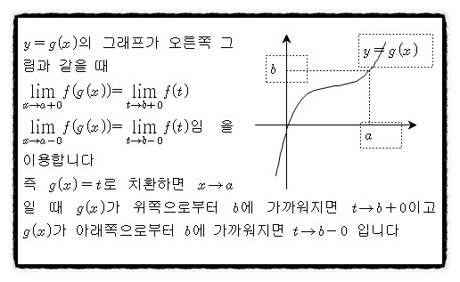

수업영상
Ⅰ 함수의 극한
Ⅰ 극한값에 대한 정의
Ⅱ 극한값이 존재할 조건 및 샌드위치 정리
Ⅲ 합성함수의 극한
Ⅳ 심화 학습
Ⅰ 극한값에 대한 정의
극한값이 존재할 조건을 들어가기 전에 먼저 극한값에 대한 정의를 알아야겠죠?
함수 f(x)에서 x → a 일때, f(x)의 값이 일정한 값 α 에 한없이 가까워지면
f(x)는 α에 수렴한다 하는데요 x→ a 일 때 f(x) → α로 나타내며 α를 f(x)의
극한값 또는 극한 이라 합니다 여기서 x → a 의 의미는 첫번째, x와 a가 다른값을 가지면서 (x≠a)
α에 한없이 가까이 가는 상태를 말합니다. 그리고 두번째 의미로 좌극한과 우극한 즉, x → a -0 과
x → a +0의 두경우를 묶어서 x → a로 나타냅니다
Ⅱ 극한값이 존재할 조건 및 샌드위치 정리
 이제 본격적으로 극한값이 존재할 조건에 대해 말해볼텐데요
극한값이 존재할 조건은 간단히 좌극한과 우극한이 같아야 한다 는 점입니다
이제 극한에 대해 기본적인 정의를 알았으니 이제 극한의 성질에 대해 알아볼 차례인데요
먼저 아래의 성질들은 일 때 즉 각각이 수렴할때 정의될 수 있습니다 그럼 성질을 살펴보면
옆에 있는 그림처럼 정리할 수 있습니다. 이어서 함수의 극한의 대소관계에 대해 살펴보도록
하겠습니다 f(x) < g(x) 이고 이면 α ≤ β 입니다 이때 여기서는 '=' 이 포함되어 있다는 점
을 참고하셔야 합니다 이 때문에 f(x) ≤ h(x) ≤ g(x) 이고 가 성립됩니다 이는 샌드위치 정리라고도 불리는데요
이제 본격적으로 극한값이 존재할 조건에 대해 말해볼텐데요
극한값이 존재할 조건은 간단히 좌극한과 우극한이 같아야 한다 는 점입니다
이제 극한에 대해 기본적인 정의를 알았으니 이제 극한의 성질에 대해 알아볼 차례인데요
먼저 아래의 성질들은 일 때 즉 각각이 수렴할때 정의될 수 있습니다 그럼 성질을 살펴보면
옆에 있는 그림처럼 정리할 수 있습니다. 이어서 함수의 극한의 대소관계에 대해 살펴보도록
하겠습니다 f(x) < g(x) 이고 이면 α ≤ β 입니다 이때 여기서는 '=' 이 포함되어 있다는 점
을 참고하셔야 합니다 이 때문에 f(x) ≤ h(x) ≤ g(x) 이고 가 성립됩니다 이는 샌드위치 정리라고도 불리는데요
Ⅲ 합성함수의 극한

이제 합성함수의 극한 인데요 합성함수란 함수 f : X → Y, g : Y → Z가 주어졌을 때
X의 임의의 원소 x에 Z의 원소 g(f(x))를 대응시키는 새로운 함수를 f와 g의 합성함수라고 합니다
이는 g◦f로 나타내는데요 또한 g◦f(x) = g(f(x)) 또는 (g◦f)(x) = g(f(x)) 로 정의합니다
합성함수의 극한을 푸는 기본적인 방법은 아래와 같은데요 합성함수의 극한의 풀이는
치환이 핵심이라 할 수 있습니다
이제 합성함수의 연속인데요 y=f(x)가 x=a에서 연속이고 y=g(x)가 x=f(a)에서 연속이면 y= g(f(x))는 x=a에서 연속입니다
따라서 y= g(f(x))의 불연속인 점은 다음 두 가지 경우의 x좌표에서 불연속이 될 수 있으므로 확인하면 됩니다
① y= f(x)가 불 연속인 점의 x좌표 ② y= g(x)가 불연속인 점의 x좌표를 함숫값으로 갖는 f(x)의 x좌표 입니다
Ⅳ 심화 학습
그렇다면 마지막으로 함수의 극한의 확장판, 엡실론-논법의 개념과 활용에 대해 알아볼게요
영상을 크게 보고 싶다면 화면에 마우스를 가져다 놓고 크기 확대 버튼을 눌러주시면 됩니다
'처음 소리가 클 수 있으니 반드시 조절하여 시작 버튼을
눌러주시기 바랍니다 그럼 시작할게요!